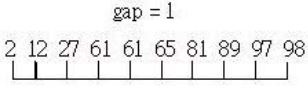

Shell 排序 - 改良的插入排序
December 8, 2021插入排序由未排序的後半部前端取出一個值，插入已排序前半部的適當位置，概念簡單但速度不快，加快的原則之一，是下次排序時，儘量利用前次排序的結果。
解法思路
Shell 排序最初由 Donald Shell 於 1959 提出。假設要排序元素有 n 個，每次插入排序時不是針對全部元素，而是取一段間隔。
Shell 先將間隔設為 n / 2，然後跳躍進行插入排序，再來將間隔設為 n / 4，跳躍進行排序，再來間隔設定為 n /8 、n / 16，直到間隔為 1 的最後一次排序，由於上次排序動作都會將固定間隔的元素排好，因此間隔越來越小時，某些元素位於正確位置的機率越高，最後幾次排序次數將可大幅減低。
舉例來說，假設未排序數字為 89、12、65、97、61、81、27、2、61、98，數字共有 10 個，第一次先將間隔設為 10 / 2 = 5，此時對間隔為 5 的數字進行排序：

畫線連結部份表示要進行排序的部份，再來將間隔設定為 5 / 2 的商，也就是 2，第二次插入排序對象如下所示：
再來間隔設為 2 / 2 = 1，此時就是單純插入排序了，由於大部份元素大致排序過，最後一次的插入排序幾乎沒什麼動作：

將間隔設定為 n / 2 是 D.L Shell 最初提出，然而 Shell 排序關鍵在於間隔的選定，有許多不同的間隔選定方式被提出，有興趣可以參考〈Shellsort::Gap sequences〉。
程式實作
#include <stdio.h>
#define LEN 10
#define SWAP(x,y) {int t; t = x; x = y; y = t;}
void sort(int*, int, int(*)(int, int));
void insertion(int*, int, int, int, int(*)(int, int));
void insert(int*, int, int, int, int(*)(int, int));
int ascending(int, int);
int descending(int, int);
void print(int*, int);
int main(void) {
int number[LEN] = {89, 12, 65, 97, 61, 81, 27, 2, 61, 98};
sort(number, LEN, ascending);
print(number, LEN);
sort(number, LEN, descending);
print(number, LEN);
return 0;
}
void sort(int* number, int len, int(*compar)(int, int)) {
int gap;
for(gap = len / 2; gap > 0; gap /= 2) {
int begin;
for(begin = 0; begin < gap; begin++) {
insertion(number, len, begin, gap, compar);
}
}
}
void insertion(int* number, int len,
int begin, int gap, int(*compar)(int, int)) {
int i;
for(i = begin + gap; i < len; i += gap) {
insert(number, begin, gap, i, compar);
}
}
void insert(int* number, int begin, int gap, int i, int(*compar)(int, int)) {
int j;
for(j = i - gap;
j >= begin && compar(number[j], number[j + gap]) > 0 ; j -= gap) {
SWAP(number[j], number[j + gap]);
}
}
void print(int* arr, int len) {
int i;
for(i = 0; i < len; i++) { printf("%d ", arr[i]); }
printf("\n");
}
int ascending(int a, int b) { return a - b; }
int descending(int a, int b) { return -ascending(a, b); }
import java.util.*;
import static java.lang.System.out;
import static java.util.Collections.swap;
public class Sort {
public static <T extends Comparable<? super T>>
int ascending(T t1, T t2) { return t1.compareTo(t2); }
public static <T extends Comparable<? super T>>
int descending(T t1, T t2) { return -ascending(t1, t2); }
public static <T extends Comparable<? super T>> void shellSort(
List<T> list) {
shellSort(list, Sort::ascending);
}
public static <T> void shellSort(
List<T> list, Comparator<? super T> c) {
for(int gap = list.size() / 2; gap > 0; gap /= 2) {
for(int begin = 0; begin < gap; begin++) {
insertionSort(list, begin, gap, c);
}
}
}
private static <T> void insertionSort(
List<T> list, int begin, int gap, Comparator<? super T> c) {
for(int i = begin + gap; i < list.size(); i += gap) {
insert(list, begin, gap, i, c);
}
}
private static <T> void insert(
List<T> list, int begin, int gap,
int i, Comparator<? super T> c) {
for(int j = i - gap;
j >= begin && c.compare(
list.get(j), list.get(j + gap)) > 0 ; j -= gap) {
swap(list, j, j + gap);
}
}
public static <T extends Comparable<? super T>>
void insertionSort(List<T> list) {
insertionSort(list, Sort::ascending);
}
public static <T> void insertionSort(
List<T> list, Comparator<? super T> c) {
insertionSort(list, 0, 1, c);
}
public static void main(String[] args) {
List<Integer> list =
new ArrayList<>(
Arrays.asList(89, 12, 65, 97, 61, 81, 27, 2, 61, 98));
shellSort(list);
out.println(list);
insertionSort(list, Sort::descending);
out.println(list);
}
}
from functools import reduce
def ascending(a, b): return a - b
def descending(a, b): return -ascending(a, b)
def insertionSort(xs, compare = ascending):
return ([] if not xs
else __insert(xs[0],
insertionSort(xs[1:], compare), compare))
def __insert(x, xs, compare):
return ([x] + xs if not xs or compare(x, xs[0]) <= 0
else [xs[0]] + __insert(x, xs[1:], compare))
def bubbleSort(xs, compare = ascending):
return [] if not xs else __up(xs, compare)
def __up(xs, compare):
if not xs[1:]:
return xs
else:
s = bubbleSort(xs[1:], compare)
return ([s[0]] + __up([xs[0]] + s[1:], compare)
if compare(xs[0], s[0]) > 0
else [xs[0]] + s)
def shellSort(xs, sort = insertionSort, compare = ascending):
return (reduce(lambda xs, gap:
sortWith(gap, xs, sort, compare), gaps(len(list)), xs))
def gaps(len):
gap = len // 2
return [gap] + gaps(gap // 2) if gap > 0 else []
def sortWith(gap, lt, sort, compare):
sortedLts = [sort(lt[begin::gap], compare)
for begin in range(0, gap)]
return [elem for sortedLt in zip(*sortedLts)
for elem in sortedLt]
list = [89, 12, 65, 97, 61, 81, 27, 2, 61, 98]
print(shellSort(list))
print(shellSort(list, compare = descending))
print(shellSort(list, sort = bubbleSort, compare = ascending))
object Sort {
def insertion[T](xs: List[T], compare: (T, T) => Boolean): List[T] = {
if(xs.isEmpty) Nil
else insert(xs.head, insertion(xs.tail, compare), compare)
}
private def insert[T](x: T, xs: List[T],
compare: (T, T) => Boolean): List[T] = {
if(xs.isEmpty || x == xs.head || compare(x, xs.head)) x :: xs
else xs.head :: insert(x, xs.tail, compare)
}
def shell[T](xs: List[T], compare: (T, T) => Boolean): List[T] =
(xs /: gaps(list.size))((xs, gap) => sortWith(gap, xs, compare))
private def sortWith[T](gap: Int, lt: List[T],
compare: (T, T) => Boolean): List[T] = {
def subWithGap[T](lt: List[T], begin: Int): List[T] = {
if(begin >= lt.length) Nil
else lt(begin) :: subWithGap(lt, begin + gap)
}
(for(begin <- 0 until gap) yield
insertion(subWithGap(lt, begin), compare)
).toList.transpose.flatten
}
private def gaps(len: Int): List[Int] = {
val gap = len / 2
if(gap > 0) gap :: gaps(gap / 2)
else Nil
}
}
val list = List(89, 12, 65, 97, 61, 81, 27, 2, 61, 98)
println(Sort.shell[Int](list, _ > _))
println(Sort.shell[Int](list, _ < _))
class Sort
@@ascending = ->(a, b) { a - b }
@@descending = ->(a, b) { -@@ascending.call(a, b) }
def self.ascending; @@ascending end
def self.descending; @@descending end
def self.insertion(xs, compare)
xs.empty? ? [] : insert(
xs[0], insertion(xs[1..-1], compare), compare)
end
def self.insert(x, xs, compare)
xs.empty? || compare.call(x, xs[0]) <= 0 ?
[x] + xs : [xs[0]] + insert(x, xs[1..-1], compare)
end
private_class_method :insert
def self.shell(xs, compare)
gaps(xs.size).reduce(xs) { |xs, gap|
sortWith(gap, xs, compare)
}
end
def self.gaps(len)
gap = len / 2
gap > 0 ? [gap] + gaps(gap / 2) : []
end
private_class_method :gaps
def self.sortWith(gap, xs, compare)
subWithGap = ->(xs, start) {
start >= xs.size ? [] :
xs[start, 1] + subWithGap.call(xs, start + gap)
}
sorted = (0...gap).map {
|start| insertion(subWithGap.call(xs, start), compare)
}
sorted[0].zip(*sorted[1..-1]).flatten
end
private_class_method :sortWith
end
list = [89, 12, 65, 97, 61, 81, 27, 2, 61, 98]
print(Sort.shell(list, Sort.descending).to_s + "\n")
print(Sort.shell(list, Sort.ascending).to_s + "\n")
function swap(list, i, j) {
var ele = list[i];
list[i] = list[j];
list[j] = ele;
}
function ascending(a, b) {return a - b;}
function descending(a, b) {return -ascending(a, b);}
function insert(list, begin, gap, i, compare) {
for(var j = i - gap; j >= begin && compare(
list[j], list[j + gap]) > 0; j -= gap) {
swap(list, j, j + gap);
}
}
function insertionSort(list, begin, gap, compare) {
for(var i = begin + gap; i < list.length; i += gap) {
insert(list, begin, gap, i, compare);
}
}
function shellSort(list, compare) {
for(var gap = parseInt(list.length / 2);
gap > 0; gap = parseInt(gap / 2)) {
for(var begin = 0; begin < gap; begin++) {
insertionSort(list, begin, gap, compare);
}
}
}
var list = [89, 12, 65, 97, 61, 81, 27, 2, 61, 98];
shellSort(list, descending);
print(list);
import Data.List (transpose)
ascending a b = a - b
descending a b = -ascending a b
insert x xs compare =
if xs == [] || (compare x $ head xs) <= 0
then x : xs
else head xs : insert x (tail xs) compare
insertionSort xs compare =
if xs == []
then []
else insert (head xs) (insertionSort (tail xs) compare) compare
gaps len =
if gap > 0 then gap : gaps (gap `div` 2)
else []
where gap = len `div` 2
sortWith gap xs compare =
foldl (++) [] (transpose [insertionSort (subWithGap xs begin) compare |
begin <- [0 .. gap - 1]])
where
subWithGap xs begin =
if begin >= length xs then []
else (xs !! begin) : subWithGap xs (begin + gap)
shellSort xs compare =
foldl (\xs gap -> sortWith gap xs compare) xs (gaps $ length xs)
main = sequence [print $ shellSort list ascending,
print $ shellSort list descending]
where list = [89, 12, 65, 97, 61, 81, 27, 2, 61, 98]